Segmentation Annotator是虾米？
所谓机器学习，也就是有老师（数据）和学生（AI），我们研究的领域是图像识别，所以AI是看图来学习的。例如我们要做猫狗识别的应用，就需要告诉AI什么是猫什么是狗。除了给AI提供学习的素材图片以外，还需要给AI下图一样的猫和狗的位置信息。否则AI是不知道哪部分是猫狗的，一不小心就会把背景里的什么东西当作猫狗理解了。
 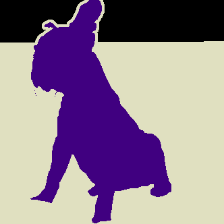
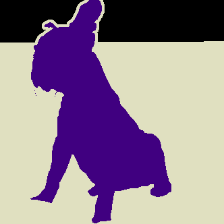
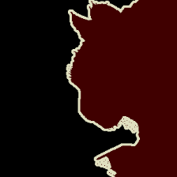
Segmentation Annotator是位置信息的标注工具。也就是给AI提供学习素材的工具。
Segmentation Annotator怎么用啊？
人的大脑可以装很多知识，但是电脑是远远比不上人的。首先请牢牢记住：一个AI只能学习一种知识，只能干一件事情。例如猫狗识别是一种知识，由一个AI来掌握，男女识别又是另一种知识了，需要另一个AI掌握。虽然理论上我们也可以把世界万物都教给一个AI，但实际上真这样干的话老师是会累死的。
使用Segmentation Annotator之前，请明确一件事，你要训练什么样的AI？一个AI我们称为一个Project。下边用一个例子Project来进行说明：就训练一个猫狗识别的AI吧。
点击右上角的Project按钮，出现这样的菜单：
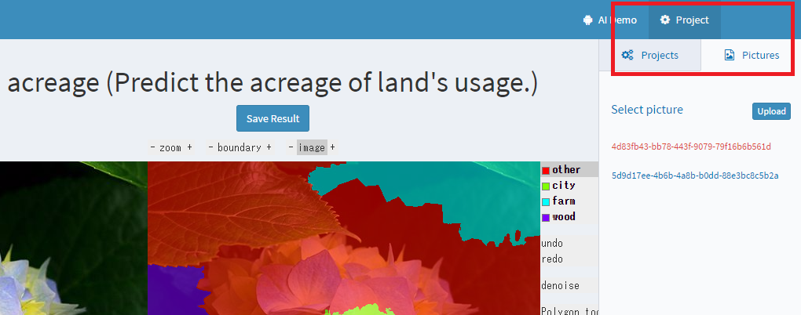菜单里有Projects标签和Pictures标签。Projects标签是选择AI的地方，一般情况下，管理员（谢帆同学）会把Project指定到当时需要做的AI去，不用特别在意，当然你也可以切换。本例子我们假定管理员已经把AI选择到了猫狗识别上。Pictures标签里是显示已经有的素材图片一览。这个标签的右上角有个Upload按钮，可以给该Project上传学习素材的原图。
下面具体地说明一下从上传到标识到最后保存结果的一个完整流程。首先我们从网上找一张猫的图片，例如下面这张，把这张图保存在自己电脑里，上传到服务器去。
点击Project -> Pictures -> Upload按钮，选择这张图片上传（小贴士：其实素材图片也可以批量上传的哦）。
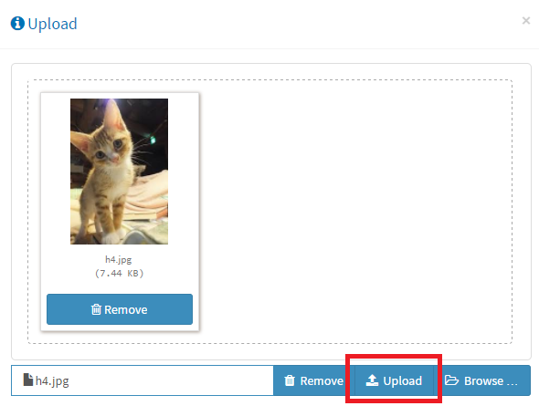上传结束后，图片列表里就会显示刚才上传的图片的名字了。名字是系统随机取的，不用在意会不会重复。点击一下刚刚上传的那张图片（图片一览里的最上方一张）。
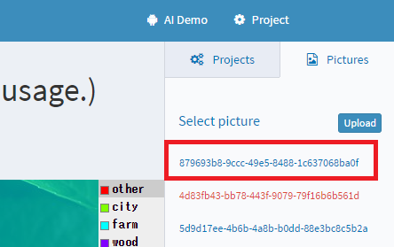在主页面就会像下边这样显示。
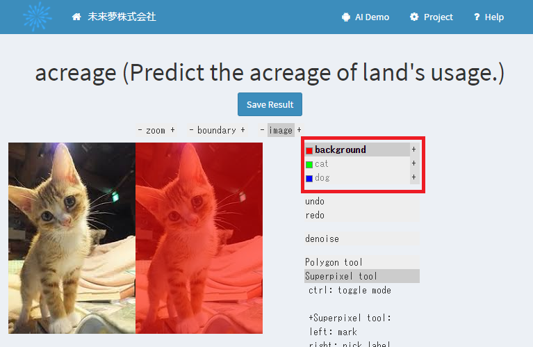刚刚上传的图片显示在了主页面上。在这里，我们需要进行标识。接下来介绍一下主页面：左边是作为参照物放了一张原图在那里，虽然没有任何功能，但在标识过程中你会发现它是很有用的。中间部分是我们的工作区间，用鼠标在上边涂颜色进行标识。右边是一些工具选项，限于篇幅，就不全部介绍了，只介绍最重要的一个功能：请看上图红色框区域，有3个项目，红色背景，绿色猫，蓝色狗。正是本例子里，我们需要标识的3种东西：猫，狗，背景。（每个Project需要标识什么，分别使用什么颜色，这些配置是系统管理员的任务。）
这张图片初始状态是被涂成全红的，也就是全是背景，我们需要做的是：把不是背景的部分涂出来。例子图里只有猫，那么我们在工具栏里选中绿色（猫），然后向下边这样涂吧。
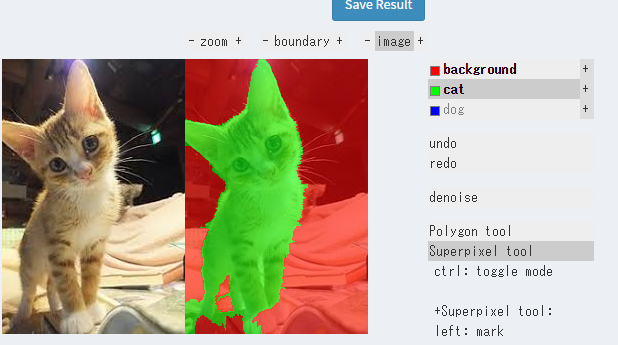请灵活使用各种工具，尽量保证精确度。要知道，学习数据越正确，AI越聪明。学生的知识取决于老师，就是这个道理。
标识工作告一段落后，使用"Save Result"按钮保存标识结果，记住经常保存哦，一不小心断电了劳力就白费了哦。
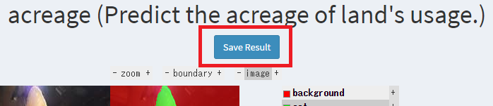现在大家该知道当老师的辛苦了吧。
说正事儿，你们准备干什么？
例子到此结束，下面说一下我们在2017年6月末为止想要做的一个Project：acreage。
我们想定的情景是这样的：某国想通过卫星地图来统计土地的使用率，例如城市10%，耕地20%，林地30%，其他40%。我们的AI，就准备通过识别google地图的卫星图，来标识土地类型。这样，某国政府只需要把全国的卫星图片交给我们的AI，就能迅速得到土地使用情况的统计结果。
你能给我们的AI贡献点学习素材吗？
你要做的事就是给我们做学习数据。素材图片请自己从google或百度取。参考下边。注意几点：素材图片里不要地名文字，不要有异物（鼠标，按钮等）；图片大小大约500*500，大约就行，上传后系统会自动整形成500*500；图片的视点（距离地面的位置）要保证在一个范围内，如果素材图片的视点差距太远，学习的效果会受到影响。
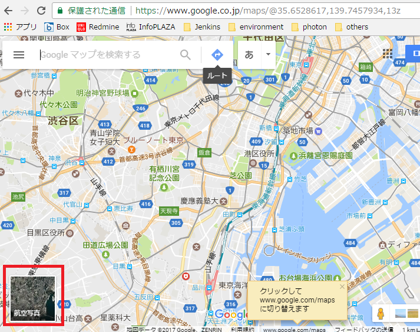 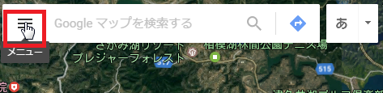 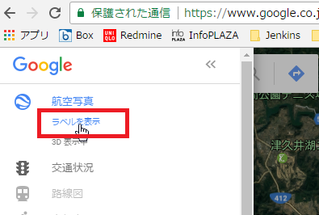大概取这个距离。